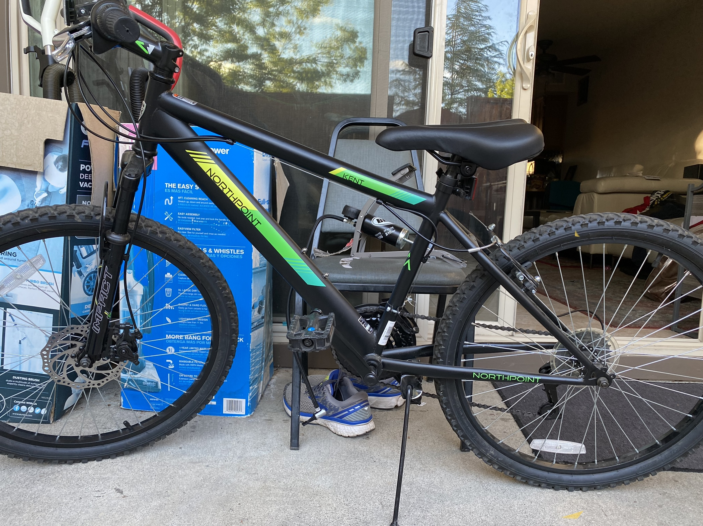

Biking
Biking,bicycling or cycling is the art of riding two wheeled vehicles called Bicycles. Here are a few links that explain this valuable life skill:
Google Search:What is Biking
My Favorite Hobby
My Favorite hobby is: Biking
The are many reasons I like Bikes. They Include:
1.The speed
2.the mechanical sophistication of the bike
3.And the fact that they are an efficient mode of transportation
Work
When it comes to biking, I've done things like ride fast to patch a tire
Here is an image of my bike:

My Inspiration
One of my greatest inspirations in Bicyclig is Kirkpatrick Macmillan, a scottish blacksmith highly accredited with inventing the pedal bicycle
Click the image to find more about this Person